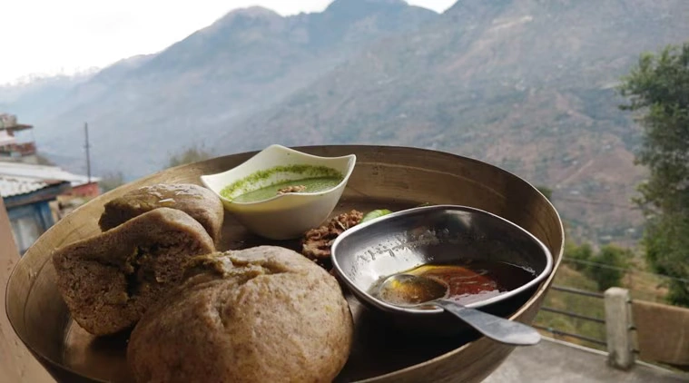
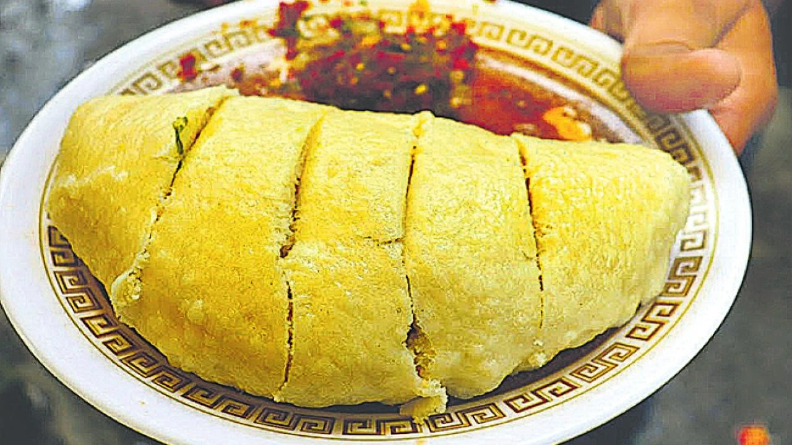
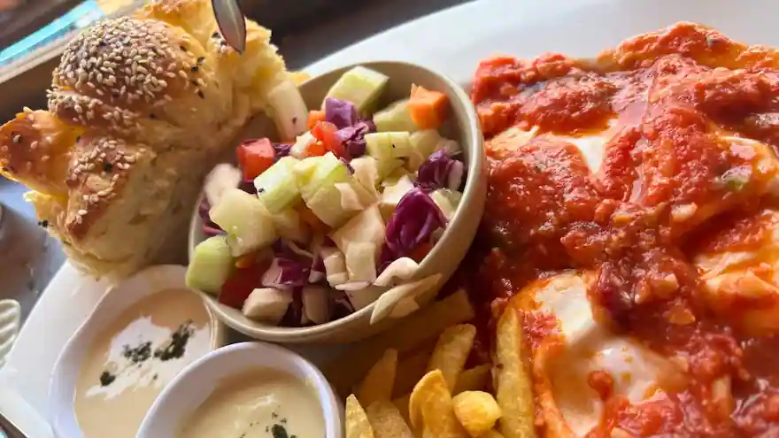
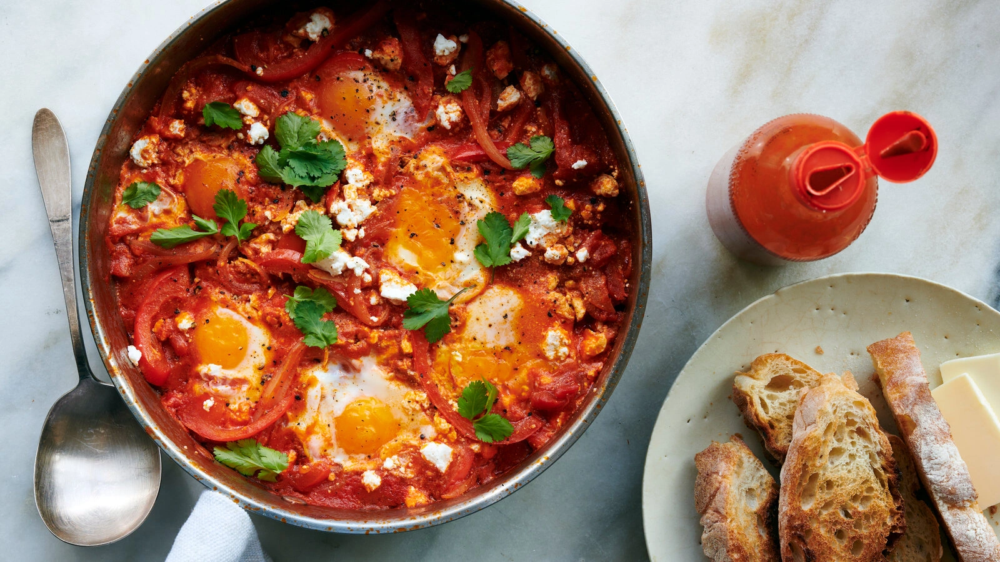

Traditional Himachali Food Guide – Best Cuisines to Try in Shimla, Kasol & Manali

Himachal Pradesh is not only famous for snow-covered mountains, pine forests, valleys and scenic road trips, but also for its rich food culture and traditional mountain cuisine. From authentic Himachali dishes to Israeli cafés in Kasol and warm Tibetan meals in Manali, the food journey across Himachal is unforgettable.
Every destination in Himachal offers a different culinary experience. Shimla is known for traditional Himachali dishes and colonial cafés, Kasol is famous for Israeli cuisine and backpacker cafés, while Manali combines local mountain food with Tibetan and North Indian flavors.
Whether you are planning a honeymoon trip, backpacking adventure, family vacation or group tour, exploring Himachali food becomes one of the best parts of the journey.
- Rich mountain flavors and slow cooking techniques
- Use of local herbs, spices and ghee
- Traditional tribal and Himalayan recipes
- Tibetan, Punjabi and Israeli food influences
- Fresh ingredients sourced from mountain villages
- Perfect comfort food for cold weather destinations
Traditional Foods to Try in Shimla
Shimla offers a beautiful mix of traditional Himachali dishes, local street food, bakeries and old colonial cafés. The cool weather and mountain atmosphere make the food experience even more enjoyable.

1. Siddu – The Most Famous Himachali Dish
Siddu is one of the most famous traditional dishes in Himachal Pradesh. It is a steamed wheat bread stuffed with fillings like walnuts, poppy seeds or lentils and served with desi ghee.
The dish is especially popular during winter because it provides warmth and energy in cold mountain weather.

- Himachali Rasoi
- Local cafés near Mall Road
- Traditional dhabas around Lakkar Bazaar
2. Madra – Traditional Chana Curry
Madra is a rich Himachali curry made using chickpeas, yogurt and traditional spices. The dish originates from the Chamba region but is now widely available across Shimla and Himachal Pradesh.
It is usually served during traditional Himachali feasts called “Dham.”
3. Himachali Dham
Dham is not just a meal but an important cultural food tradition in Himachal Pradesh. It is a festive platter served during weddings and celebrations.
A traditional Dham usually includes:
- Madra
- Rajma
- Kadhi
- Rice
- Curd-based curries
- Sweet dishes
4. Babru – Himachali Street Food
Babru is a local Himachali snack similar to kachori. It is stuffed with black gram paste and deep fried until crispy.
It is commonly served with tamarind chutney and tea.
5. Café Culture in Shimla
Shimla is also famous for old cafés, bakeries and coffee houses established during British rule.
- Indian Coffee House
- Wake & Bake Café
- Café Simla Times
- Ashiana Restaurant
- Trishool Bakery
Best Foods to Try in Kasol
Kasol has a completely different food culture compared to Shimla. Located in Parvati Valley, Kasol is famous for Israeli cuisine, riverside cafés, backpacker culture and mountain cafés.
The food scene here attracts travelers from around the world.
1. Israeli Cuisine in Kasol
Kasol is often called the “Mini Israel of India” because of its strong Israeli cultural influence.
Popular Israeli dishes available in Kasol include:

- Shakshuka
- Falafel
- Hummus & Pita
- Israeli Breakfast Platters
- Sabich
- Mint Lemon Tea

- Moon Dance Café
- Evergreen Café
- Jim Morrison Café
- Bhoj Café
- Freedom Café
2. Trout Fish in Parvati Valley
Fresh trout fish is one of the most famous delicacies in Himachal Pradesh. The fish is sourced from cold Himalayan rivers and cooked using local spices.
Many riverside cafés in Kasol and nearby Tosh serve freshly prepared trout meals.
3. Wood Fired Pizzas & Mountain Cafés
Kasol’s café culture is famous for wood-fired pizzas, pancakes, desserts and live music cafés.
Travelers especially enjoy riverside dining experiences with mountain views.
4. Momos and Tibetan Food
Tibetan cuisine is highly popular in Kasol due to Himalayan influences.
- Steamed momos
- Fried momos
- Thukpa soup
- Tibetan noodles
- Butter tea
Traditional Foods to Explore in Manali
Manali offers one of the most diverse food cultures in Himachal Pradesh. The town combines Himachali cuisine, Tibetan food, North Indian meals and international café culture.
1. Tibetan Cuisine in Manali
Because of strong Tibetan influence, Manali is famous for authentic Tibetan dishes.
- Momos
- Thukpa
- Tingmo
- Thenthuk
- Butter Tea
2. Chha Gosht – Traditional Himachali Mutton Curry
Chha Gosht is a traditional Himachali mutton curry cooked with yogurt, gram flour and local spices.
The dish is extremely popular among non-vegetarian travelers visiting Himachal Pradesh.
3. River Side Café Experiences
Old Manali and Vashisht are famous for scenic riverside cafés offering food with Himalayan views.
Many cafés provide:
- Live music
- Mountain ambience
- Wood-fired pizzas
- Continental breakfasts
- Fresh bakery items
- Café 1947
- Johnson’s Café
- Drifters Café
- Rocky’s Café
- The Lazy Dog
4. Local Street Food in Manali
Manali’s Mall Road is filled with street food stalls and small eateries.
- Hot gulab jamun
- Maggi with mountain tea
- Momos
- Pakoras
- Kulhad coffee
Best Food Experiences During a Shimla–Kasol–Manali Tour
A Himachal tour is incomplete without exploring the food culture of different mountain towns.
- Eating Siddu during cold Shimla evenings
- Trying Israeli breakfast in Kasol cafés
- Drinking hot Kahwa in mountain cafés
- Enjoying trout fish beside Parvati River
- Tasting Tibetan momos in Manali
- Having tea and Maggi during mountain road trips
- Experiencing traditional Himachali Dham meals
Best Time to Enjoy Himachali Food Tours
Summer Season (March to June)
Perfect weather for café hopping, sightseeing and riverside dining.
Monsoon Season (July to September)
Beautiful green valleys and peaceful café atmosphere.
Winter Season (October to February)
Ideal for hot traditional meals, snow cafés and cozy mountain food experiences.
Why Food Becomes the Soul of a Himachal Trip
Food in Himachal Pradesh is deeply connected with mountains, weather, culture and local traditions. Every dish reflects warmth, simplicity and authentic Himalayan flavors.
From traditional Himachali feasts in Shimla to riverside cafés in Kasol and Tibetan food in Manali, the culinary journey becomes one of the most memorable parts of travelling through Himachal Pradesh.
Wander & Wonder Travels – Himachal Tour Packages
Wander & Wonder Travels offers carefully curated Himachal Pradesh tour packages covering Shimla, Kasol, Manali, Spiti Valley and other beautiful Himalayan destinations.
- Comfortable stays
- Budget-friendly group tours
- Local café recommendations
- Authentic Himachali experiences
- Experienced trip coordination
- Scenic road trip experiences